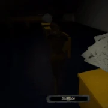
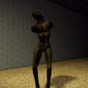

Rosemary is the second monster in Pillar Chase 2, and is initially unlocked from the start alongside Vapor and Baldi . She is a slim, thin humanoid demon known for her loud screaming. She is an original monster who originates from the first Pillar Chase. She is directly inspired by one of the two monsters that can be found in the horror Oculus Rift game Terrorift, as well as the stock unity model Total Horror..
|  Rosemary tilts her head back and shrieks loudly. Any player near her will be blinded and have an ear-ringing sound play briefly. This allows Rosemary to regenerate stamina & gain more if any players are hit with it. This ability also does 5 damage. Has a cooldown of 11 seconds.. |
 Rosemary emits a dark demonic essence that follows her around. Any player near her will have their stamina drain quicker. Rosemary's stamina drain is reduced while this is active. This ability lasts for 14 seconds. Has a cooldown of 17 seconds. |